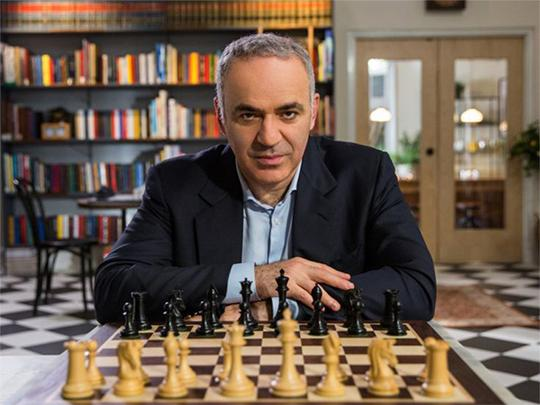
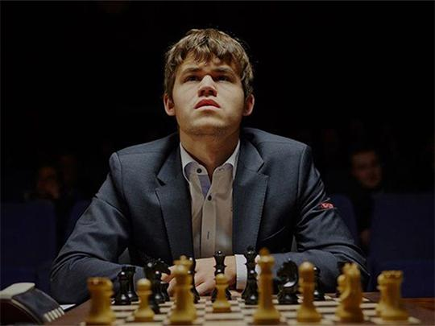
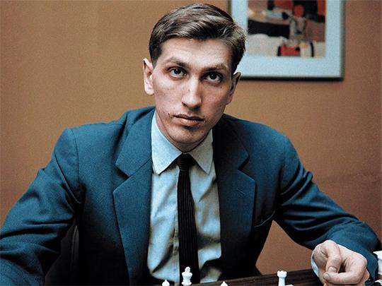
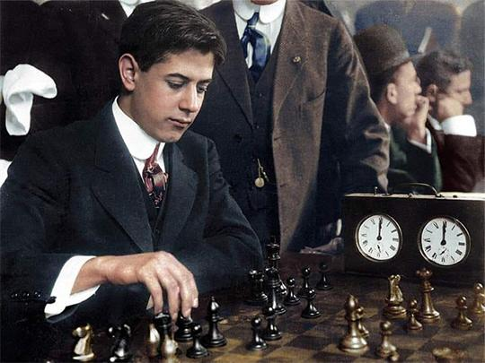
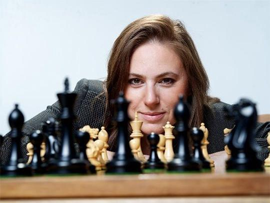

VIe siècle - Inde : Naissance du Chaturanga. Jeu de guerre sur 8x8 cases.
Xe siècle - Perse/Europe : Devient Shatranj. Arrive en Espagne. La Reine devient la pièce la plus forte.
1886 : 1er Champion du Monde : Wilhelm Steinitz.
1972 : Fischer vs Spassky. Les échecs deviennent politiques pendant la Guerre Froide.
1997 : Deep Blue bat Kasparov. L'IA entre dans le jeu.
Aujourd'hui : Magnus Carlsen domine. 100M+ de joueurs sur Chess.com et Lichess. Boom grâce au streaming et "The Queen's Gambit".
64 cases : 8 colonnes A à H + 8 lignes 1 à 8. E4, D5 = coordonnées. La case en bas à droite doit être blanche.
Tu prends une pièce adverse en allant sur sa case avec l'une des tiennes. Le pion est spécial: il avance droit mais capture en diagonale.
Échec : Ton roi est attaqué.
Échec et Mat : Le roi est attaqué et ne peut pas fuir. Tu gagnes !
Pat : Pas d'échec mais aucun coup possible. Match nul.
1. Contrôler le centre : Joue e4, d4, e5, d5 au début.
2. Développer : Sors tes cavaliers et fous vite. Fais le roque pour protéger ton roi.
3. Ne donne pas de pièces gratos : Regarde toujours si une pièce est attaquée avant de jouer.





Joue, apprends et discute avec d'autres passionnés d'échecs.
📱 Rejoindre le Groupe WhatsAppChess.com - Le plus grand site. Cours + Tournois
Lichess.org - 100% Gratuit et sans pub
GothamChess - Levy Rozman : Le prof qui explique tout simplement.
Hikaru Nakamura : Le n°1 du Blitz mondial sur Twitch.
Blitzstream - Kévin Bordi : La référence FR pour apprendre en s'amusant.